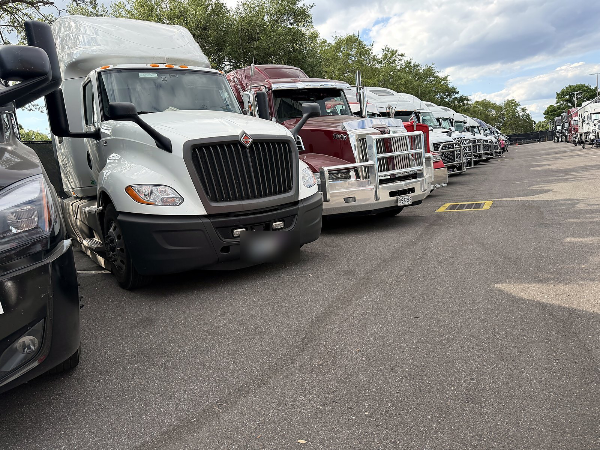

Recent work
On the road with CW



Most carriers stop at "we'll pull it." CW goes further with towaway and driveaway moves, drop and hook, and the care that branded show and merch trailers need.
Pick the service, or combine them. One call covers it.
"Move my trailer" requests, trailer relocation, delivery and one-way equipment moves.
Drop and hook: we drop or pick up trailers so your schedule keeps moving.
Branded trailers for Fanatics, WWE and UFC moved with the same personal attention, even an empty trailer.
Generators, chillers, mobile medical units and command centers, since 1995.
Full power only details at PowerOnlyTrucking.us → · Entertainment logistics at Tourtrucks.com →

Power Only and Beyond is a service of CW Leasing & Transport Inc (est. 1990) and its sister company CW Logistics (est. 2001), which adds capacity through partner and dedicated carriers. These two South Bend, Indiana family businesses were bought by Rodney and Christi McDonald, who feel fortunate to carry them forward.
Our tractors have been covering last-minute, surprise and immediate-need power only work for tours, sports and live events for more than 31 years. EPA SmartWay Transport Partner since 2017 is part of how we operate. For any load, certificates of insurance are available on request. Head to Tourtrucks.com for the full company background.
"When you prepare for the unpredictable, chaos is just another tool in your arsenal." — Rodney McDonald, President

President, CW Leasing & Transport Inc and CW Logistics
Rodney McDonald opened his first company at 20 and learned Murphy's Law the hard way: anything that can go wrong, will. What matters is how you handle the problem and how you plan for the unknown. For more than 31 years he has handled last-minute, surprise and immediate-need transportation for sports and entertainment. CW Leasing & Transport (est. 1990) and its sister company CW Logistics (est. 2001) are family businesses that Rodney and Christi were fortunate to buy and carry forward. Under his leadership, CW has been an EPA SmartWay Transport Partner since 2017. His motto: "When you prepare for the unpredictable, chaos is just another tool in your arsenal."

Vice President, CW Leasing & Transport Inc and CW Logistics
Christi McDonald is one of the founders of the business and has worked in trucking since 1995. She started out sending letters on a typewriter. Over the years she worked her way up to running 180 trucks on a Sunday-night load-in, and today she helps keep the company running like a well-oiled machine. Christi has been Vice President of RPM-CLM Family Enterprises since 2004, and Vice President of CW Leasing & Transport Inc and CW Logistics since 2016. She encourages every customer and driver to reach out to the team for anything they need. Her faith in God and her commitment to family guide everything she does, and she brings that same care to the CW family of employees, drivers and customers. Outside the office, she supports local animal rescue, including The Meow Mission.

Dispatcher
Kyra Lash joined CW Leasing & Transport Inc as a Dispatcher in August 2026, "trading lab coats for logistics." A gifted learner from an early age, she began taking pre-college courses at Northwestern University's Center for Talent Development at age 10, studying engineering, pre-law, mathematics and theater arts. She started her associate degree in biology at Ivy Tech Community College as a junior in high school and finished it at 19. At 21 she earned her bachelor's degree in biology from Purdue University. She then spent three years as a medical laboratory technician and scientist with Alverno Laboratories and Northwest Cancer Centers. This isn't her first time at CW: starting her freshman year of high school, she worked at the company during breaks from school and college. Today she handles morning check calls, enters and dispatches tour loads, and works with tour logistics partners on rates and driver pay. Outside the office, Kyra danced competitively from age 3 until she was diagnosed with a hereditary connective tissue disorder in college.

Office Manager
Crissy Bolinger has been Office Manager at CW Leasing & Transport Inc since September 1997, making her one of the longest-tenured members of the team. She keeps the office side of both CW Leasing & Transport Inc and CW Logistics on track. She handles daily receivables reporting and company account reconciliation, works with the company's outside accountants each month, and manages the electronic logging system. When drivers' pay or paperwork needs sorting out, Crissy is the steady hand behind the scenes. She is a graduate of Floyd Central Junior-Senior High School.

Fleet Specialist
Darlene Fisher has been a Fleet Specialist at CW Leasing & Transport Inc since November 2015. Her day starts with morning check calls, using live truck locations to keep every load's status current. She answers phones, dispatches drivers, sets up new customers, and keeps fleet records and reminders up to date. When a truck or trailer needs attention on the road, Darlene coordinates the repair so drivers can get moving again. She is often the first friendly voice customers and owner-operators hear when they call. Before joining CW in 2015, she worked for RPM-CLM Family Enterprises from 2002 to 2005. She is a graduate of Washington High School in South Bend. Her late husband, Bruce, was a mentor to Rodney and Christi McDonald from 1996 through 2006 and an integral part of the company's success.

Dispatch & Account Representative
Kathleen "Kathy" Czajkowski brings 26 years of dispatch and account representative experience, including towaway and RV dispatch and quoting loads. Over her career she has also dispatched moving units for the U.S. Border Patrol, the FBI and other government agencies. At CW Leasing & Transport Inc she matches power-only trucks to tour and event loads. Each day she sends customers updated lists of where trucks are available, and she keeps track of driver availability across the country. Kathy holds an associate's degree in Accounting & Data Processing from Davenport College. A dependable, outgoing people person with great communication skills, she helps keep trucks loaded and customers informed.

Billing Department
Karen Jankowski runs billing for CW Leasing & Transport Inc and CW Logistics. Every morning she sends out the accounts receivable aging report. Throughout the day she handles invoicing, credit memos, fuel reports and outside carrier payments. Karen carefully checks each rate sheet against the final invoice so customers are billed accurately and carriers are paid on time. Her careful work keeps the financial side of every move clean and clear, and she has helped train newer team members on the billing process.

Sales
Yvette Hartman joined CW Leasing & Transport Inc in sales, working remotely from the Chicago area. She focuses on entertainment, tours, live events and trade shows. She began in shipping and receiving, then booked loads for a third-party logistics firm. From 2016 to 2023 she worked as an independent logistics specialist, handling account management, sales, load planning, dispatching, new carrier setups, invoicing and customer service. She then spent a year and a half at Powersource Transportation as Entertainment Coordinator and Operations Manager Assistant. At CW, she has handled specialty moves across the US and into and out of Canada.
Send origin, destination, trailer type, pickup date and any deadlines. Rodney or the CW team will get right back to you.
CW Leasing & Transport Inc
23390 W Ireland Rd
South Bend, IN 46614
USDOT 573816
MC 279857